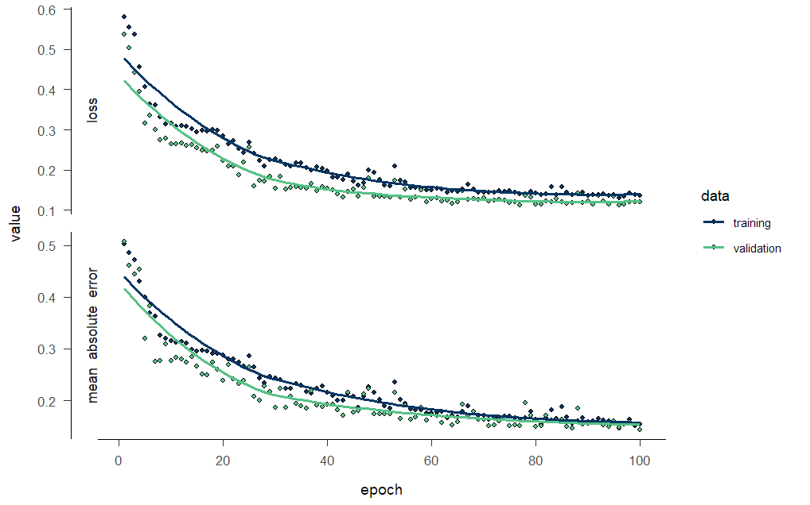
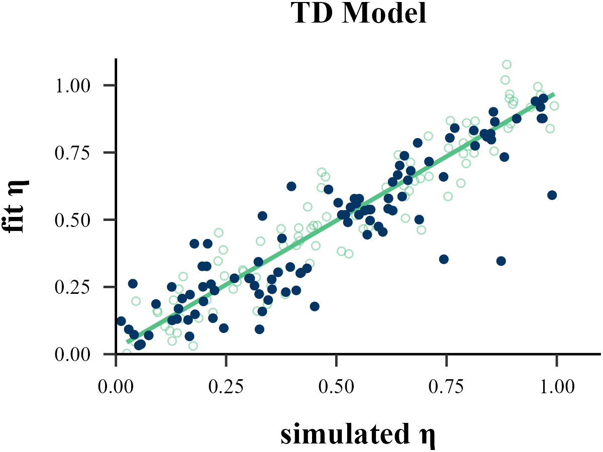
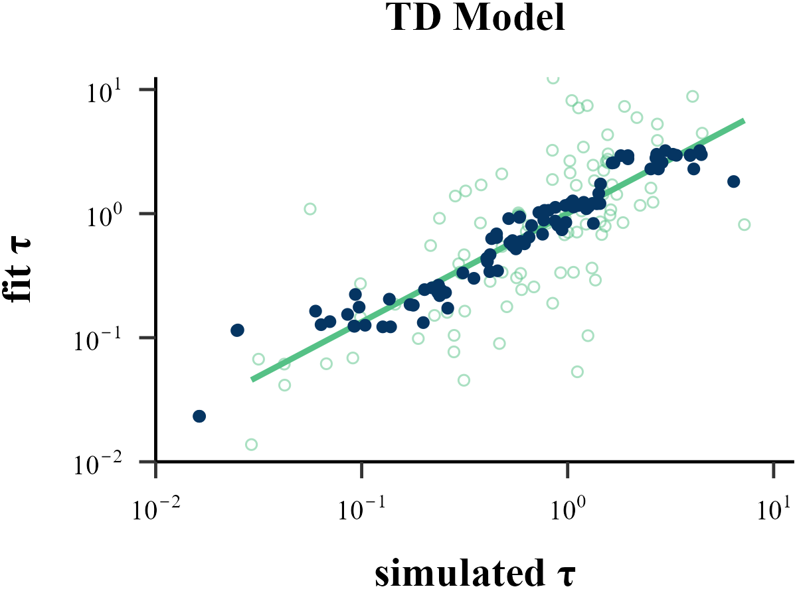

Traditional methods like MLE, MAP, MCMC all operate on a similar principle: they start with a set of parameters, run a reinforcement learning model to generate a sequence of choices, and then evaluate the similarity between this simulated sequence and the human subject’s behavior to determine if the parameters are optimal.
In contrast, Recurrent Neural Network (RNN) uses a reverse approach. It takes a large number of choice sequences, each generated by different parameters, as input, and parameters that generated those sequences, as output. By training this large-scale model, a direct mapping between behavior and parameters is established. Once the neural network is trained, it can be given a new sequence of choices and can directly infer which parameters likely generated it.
Install Packages
# You need to accept three terms of the conda license to install Miniconda.
conda tos accept --override-channels --channel https://repo.anaconda.com/pkgs/main
conda tos accept --override-channels --channel https://repo.anaconda.com/pkgs/r
conda tos accept --override-channels --channel https://repo.anaconda.com/pkgs/msys2
reticulate::install_miniconda()Install TensorFlow according to system and CPU/GPU
# To run TensorFlow, you need to downgrade NumPy.
conda install numpy=1.26.4Simulating Data
list_simulated <- binaryRL::simulate_list(
data = binaryRL::Mason_2024_G2,
id = 1,
n_params = 2,
n_trials = 360,
obj_func = binaryRL::TD,
rfun = list(
eta = function() { stats::runif(n = 1, min = 0, max = 1) },
tau = function() { stats::rexp(n = 1, rate = 1) }
),
iteration = 1100 # = [800(train) + 200(valid)] + [100(test recovery)]
)
n_sample = 1000
n_trials = 360
n_info = 3
n_params = 2Step 1: List to Matrix
# create NULL list
X_list<- list()
Y_list <- list()
# obtain options
unique_L <- unique(list_simulated[[1]]$data$L_choice)
unique_R <- unique(list_simulated[[1]]$data$R_choice)
options <- sort(unique(c(unique_L, unique_R)))
options <- as.vector(options)
# as.matrix
for (i in 1:n_sample) {
# Input Info: L_choice, R_choice, Sub_Choose
X_list[[i]] <- as.matrix(
data.frame(
L_choice = match(
x = list_simulated[[i]]$data$L_choice,
table = options
),
R_choice = match(
x = list_simulated[[i]]$data$R_choice,
table = options
),
Choose = match(
x = list_simulated[[i]]$data$Sub_Choose,
table = options
)
)
)
# Output Info: RL Model Parameters
Y_list[[i]] <- as.matrix(
do.call(
what = data.frame,
args = lapply(
X = 1:length(list_simulated[[i]]$input),
FUN = function(j) {
list_simulated[[i]]$input[[j]]
}
)
)
)
}Step 3: Train & Valid
train_indices <- 1:floor(0.8 * n_sample)
valid_indices <- -train_indices
X_train <- X[train_indices, , , drop = FALSE]
X_valid <- X[valid_indices, , , drop = FALSE]
Y_train <- Y[train_indices, , drop = FALSE]
Y_valid <- Y[valid_indices, , drop = FALSE]Step 4: Training RNN Model
#reticulate::use_condaenv("tf-cpu", required = TRUE)
reticulate::use_condaenv("tf-gpu", required = TRUE)
set.seed(123)
# Initialize Model (sequential decision making)
Model <- keras::keras_model_sequential()
algorithm = "GRU"
#algorithm = "LSTM"
# Recurrent Layer
switch(
EXPR = algorithm,
"GRU" = {
Model <- keras::layer_gru(
object = Model,
units = 128,
input_shape = c(n_trials, n_info),
return_sequences = FALSE,
)
},
"LSTM" = {
Model <- keras::layer_lstm(
object = Model,
units = 128,
input_shape = c(n_trials, n_info),
return_sequences = FALSE,
)
},
) |>
# Hidden Layer
keras::layer_dense(
units = 64,
activation = "relu"
) |>
# Output Layer
keras::layer_dense(
units = n_params,
activation = "linear"
) |>
# Loss Function
keras::compile(
loss = "mean_squared_error",
optimizer = "adam",
metrics = c("mean_absolute_error")
)
# Training RNN Model
history <- Model |>
keras::fit(
x = X_train,
y = Y_train,
epochs = 100,
batch_size = 10,
validation_data = list(X_valid, Y_valid),
verbose = 2
)

Parameter Recovery
X_pred_list <- vector("list", length = 100)
X_true_list <- vector("list", length = 100)
for (i in (n_sample + 1):(n_sample + 100)) {
X_sub <- array(NA, dim = c(1, n_trials, n_info))
X_sub[1, , ] <- as.matrix(
data.frame(
L_choice = match(
x = list_simulated[[i]]$data$L_choice,
table = options
),
R_choice = match(
x = list_simulated[[i]]$data$R_choice,
table = options
),
Choose = match(
x = list_simulated[[i]]$data$Sub_Choose,
table = options
)
)
)
################################## [core] ######################################
X_pred <- predict(object = Model, x = X_sub)
################################## [core] ######################################
X_pred_list[[i - n_sample]] <- X_pred
X_true_list[[i - n_sample]] <- list_simulated[[i]]$input
}
df_true <- as.data.frame(do.call(rbind, X_true_list))
df_pred <- as.data.frame(do.call(rbind, X_pred_list))
cor(df_true$V1, df_pred$V1)
cor(df_true$V2, df_pred$V2)[1] 0.8991028
[1] 0.8661612

